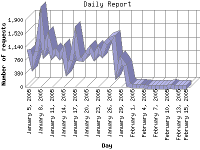

Analog 5.32
Analog 5.32 Report Magic 2.16
Report Magic 2.16The Daily Report identifies the activity for each day within the reporting period. Remember that one page hit can result in several server requests as the images for each page are loaded.

| Day | Number of requests | Number of page requests | |
|---|---|---|---|
| 1. | February 15, 2005 | 2 | 2 |
| 2. | February 14, 2005 | 1 | 1 |
| 3. | February 13, 2005 | 0 | 0 |
| 4. | February 12, 2005 | 0 | 0 |
| 5. | February 11, 2005 | 14 | 0 |
| 6. | February 10, 2005 | 2 | 0 |
| 7. | February 9, 2005 | 0 | 0 |
| 8. | February 8, 2005 | 0 | 0 |
| 9. | February 7, 2005 | 0 | 0 |
| 10. | February 6, 2005 | 0 | 0 |
| 11. | February 5, 2005 | 0 | 0 |
| 12. | February 4, 2005 | 9 | 9 |
| 13. | February 3, 2005 | 24 | 24 |
| 14. | February 2, 2005 | 23 | 23 |
| 15. | February 1, 2005 | 26 | 26 |
| 16. | January 31, 2005 | 50 | 46 |
| 17. | January 30, 2005 | 615 | 274 |
| 18. | January 29, 2005 | 763 | 313 |
| 19. | January 28, 2005 | 456 | 188 |
| 20. | January 27, 2005 | 1,391 | 427 |
| 21. | January 26, 2005 | 1,350 | 749 |
| 22. | January 25, 2005 | 1,228 | 474 |
| 23. | January 24, 2005 | 933 | 389 |
| 24. | January 23, 2005 | 1,080 | 499 |
| 25. | January 22, 2005 | 853 | 352 |
| 26. | January 21, 2005 | 1,078 | 347 |
| 27. | January 20, 2005 | 945 | 317 |
| 28. | January 19, 2005 | 782 | 284 |
| 29. | January 18, 2005 | 795 | 298 |
| 30. | January 17, 2005 | 1,389 | 330 |
| 31. | January 16, 2005 | 756 | 416 |
| 32. | January 15, 2005 | 497 | 334 |
| 33. | January 14, 2005 | 1,068 | 476 |
| 34. | January 13, 2005 | 869 | 422 |
| 35. | January 12, 2005 | 1,017 | 325 |
| 36. | January 11, 2005 | 890 | 248 |
| 37. | January 10, 2005 | 1,379 | 337 |
| 38. | January 9, 2005 | 1,047 | 455 |
| 39. | January 8, 2005 | 1,838 | 1,474 |
| 40. | January 7, 2005 | 1,013 | 335 |
| 41. | January 6, 2005 | 647 | 231 |
| 42. | January 5, 2005 | 1,067 | 384 |
Most active day March 24, 2003 : 1,616 pages sent.
Daily average: 308 pages sent. 739 requests handled.
This report was generated on March 2, 2005 10:49.
Report time frame March 9, 2003 20:57 to February 15, 2005 03:11.
| Web statistics report produced by: | |
| Analog 5.32 | Report Magic 2.16 |